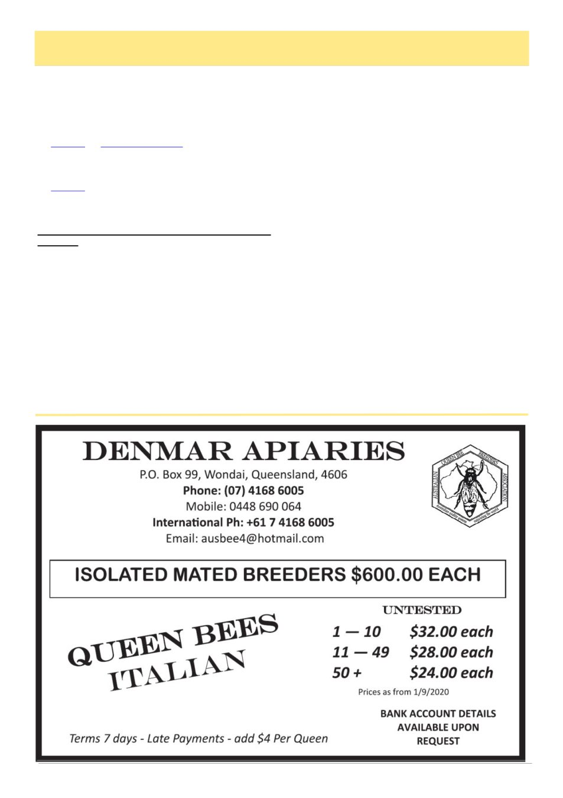

May 2026
7
President’s Report, cont’d
Managing Stress on the Farm: A downloadable
booklet from the National Centre for Farmer Health.
The easy-to-read booklet designed to help you spot
signs of stress early so you can take action.
General Resources: AgVic has assembled links to a
wide range of support resources for agricultural busi-
ness owners and workers.
>biosecurity grants delivering for industry at a time of
need >>>
VAA Biosecurity Grants: Education and Research
in Action
Ironbark Forest Research
The first project will result in published research
providing a prescriptive strategy to save Victoria‟s Box
Ironbark forests. This species is vital for honeybee
health, yet due to its slow-growing nature, Ironbark
forests cannot regenerate quickly after drought, fire or
logging. Our findings will be sent to government to
serve as a road map for future forest restoration.
Thanks go to the working group who have already
trekked across Victoria photographing exemplar forest
sites as the foundation for this research. The project
team and our lead researcher have already produced a
highly detailed preliminary report, and the final report
will be presented at this year‟s VAA Annual Confer-
ence in June.
Biosecurity Education and Communication
The second grant provides up to $50,000 per year
over three years for the development of honeybee bi-
osecurity education and communication programs. It‟s
designed to fill the gap left by the end of the T2M and
VDO programs earlier in 2026. With an outstanding
committee driving this work, we have already designed
and delivered two highly successful full-day work-
shops:
•
09 March 2026: an Advanced Varroa Manage-
ment workshop for commercial beekeepers in
Swanpool, attended by almost 100 commercial
beekeepers from across Victoria.
•
02 May 2026: a Varroa Specialist workshop for
recreational beekeepers and regional bee club
biosecurity officers in northwest Melbourne,
which reached registration capacity within just a
few weeks, again almost 100 beekeepers.
Videos from these workshops can be viewed on the
VAA Educational YouTube channel. This online video
library is expanding every month and now boasts over
75 videos and almost 500 subscribers. Some videos
have over 1,300 views.
See
you
in
June
at
the
conference.
Lindsay Callaway
President,
Victorian Apiarists‘ Association
(Continued from page 6)